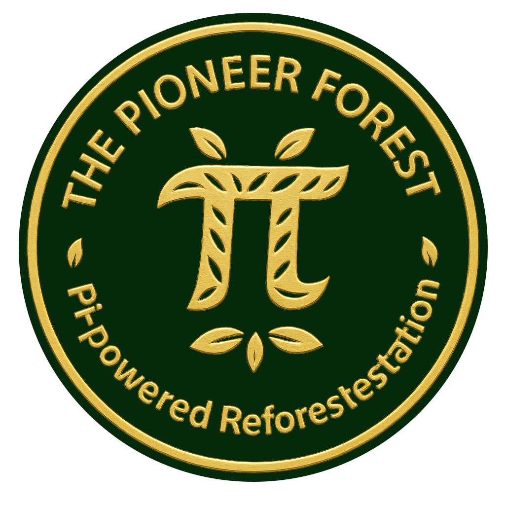

Impact
Recorded planting and estimated CO₂ capture.
This page brings together recorded Pi contributions and the estimated CO₂ capture associated with documented planting.
TPF checks these totals against its records before publishing them. The review date below shows how current the summary is.
Recorded Totals
Loading the public summary…
Source: the reviewed TPF public summary, supported by contribution records and Tree-Nation planting proof.
How to Verify
The Pioneer Forest maintains a public record of activity through Fireside updates, blockchain transaction references, and external planting documentation where available.
Direct planting records can be reviewed through the Tree-Nation profile .
Public updates and milestone records are published on the The Pioneer Forest channel on Fireside .
Interpretation
Pi contributions and planting are recorded activities. The CO₂ figure is an estimate of what those trees will capture over time, not CO₂ already removed from the atmosphere.
Tree-Nation’s current calculations are capped at the first ten years of growth. Actual capture depends on the trees, site conditions and their survival. Read the Tree-Nation methodology →